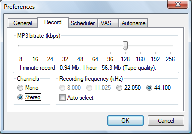

- The program encodes all sounds into the mp3 format for hard disk space saving. To change the encode parameters, open the preferences dialog by the menu:
- Options
 Preferences...
Preferences... - 
The MP3 bitrate slider sets the encoding compression level. A higher bitrate gives better sound quality, but uses more hard disk space. Check the Auto select flag in the Recording frequency group for an automatic frequency selection according to current bitrate value.
Note.
It the Stereo mode each channel uses only a half from total bitrate. Thus,
on low bitrates (< 48 kbps) use the Mono mode to better
sound quality.